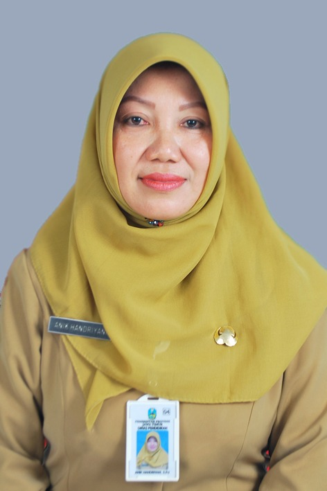

SDLB
Jenjang dasar dengan pembelajaran tematik, pengembangan motorik, dan kemandirian sehari-hari.
🌱 Sekolah Ramah Disabilitas & Berbasis Teknologi
Mewujudkan Peserta Didik Berkebutuhan Khusus yang Mandiri, Berprestasi, dan Berkarakter.
143+ peserta didik belajar dengan bahagia setiap hari di sini
Tentang Kami
SLB Negeri Tompokersan Lumajang merupakan satu-satunya SLB Negeri di Kota Lumajang, berdiri sejak tahun 1984 dengan nama SDLB Tompokersan Lumajang. Pada tanggal 10 Juli 2018, sekolah ini beralih fungsi menjadi SLB Negeri Tompokersan Lumajang, beralamat di Jalan Veteran No. 31, Kelurahan Tompokersan, Kecamatan Lumajang, Kabupaten Lumajang, Provinsi Jawa Timur.
Terwujudnya SLB yang menghasilkan lulusan berkarakter, kreatif, dan mandiri.

“Setiap anak memiliki cara belajarnya sendiri. Tugas kami adalah menemukan cara itu, lalu membantunya bertumbuh menjadi pribadi yang mandiri dan bangga pada dirinya sendiri.”
Anik Handriyani, S.Pd. — Kepala SLB Negeri Tompokersan Lumajang
Jenjang dasar dengan pembelajaran tematik, pengembangan motorik, dan kemandirian sehari-hari.
Penguatan akademik dasar, keterampilan sosial, dan pengenalan bakat vokasional siswa.
Pematangan vokasi, kesiapan kerja/wirausaha, dan penguatan karakter menuju kemandirian penuh.
Spesialisasi Edukasi
Pengajaran yang dipersonalisasi sesuai kebutuhan fisik, kognitif, dan komunikasi setiap peserta didik.
Fokus pada regulasi emosi, panduan visual untuk struktur harian, serta stimulasi sensori terpadu.
Pengembangan keterampilan hidup mandiri (bina diri / ADL) serta kecakapan sosial praktis sehari-hari.
Latihan artikulasi wicara, persepsi bunyi dan irama (BKPBI), serta penggunaan bahasa isyarat BISINDO / SIBI.
Pembelajaran huruf Braille, orientasi dan mobilitas (OM) dengan tongkat, serta teknologi audio digital.
Bina gerak dan koordinasi motorik, serta lingkungan persekolahan yang ramah aksesibilitas.
Pendampingan yang disesuaikan dengan kombinasi kebutuhan murid, disertai rancangan stimulasi multisensori.
Jenis layanan dapat berbeda pada tiap jenjang dan kebutuhan murid. Hubungi admin sekolah untuk informasi lebih lanjut.
Program Vokasi
Membekali murid dengan pengetahuan dan kemampuan mengolah, menyajikan, serta menjaga kebersihan dan keamanan makanan dan minuman sesuai prosedur yang sederhana dan fungsional.
Memberikan pengetahuan dan kemampuan dalam membuat, memperbaiki, dan merawat pakaian serta berbagai produk tekstil secara sederhana sesuai kebutuhan dan potensi murid.
Membekali murid dengan kemampuan menjaga kebersihan, kerapian, dan perawatan lingkungan rumah maupun tempat kerja sehingga tercipta lingkungan yang sehat, aman, dan nyaman.
Membekali murid dengan kemampuan menggunakan perangkat komputer, internet, dan aplikasi digital secara aman, tepat, dan produktif sesuai kebutuhan pembelajaran, kehidupan sehari-hari, dan dunia kerja.
Membekali murid dengan kemampuan merancang, membuat, dan memanfaatkan berbagai bahan sederhana maupun barang bekas menjadi produk kerajinan yang bernilai guna dan bernilai ekonomi.
Mengajarkan murid mengenal alat dan bahan, keselamatan kerja, prosedur pencucian yang benar, dan tahap finishing.
Mengajarkan murid mengenal anatomi tubuh, gerakan dasar massage, dan aplikasi area tubuh.
Kemandirian Vokasi
Hasil praktik nyata murid dari program vokasi sekolah. Hubungi admin untuk informasi pemesanan dan ketersediaan.
Memuat katalog...
Katalog ini dapat diperbarui kapan saja dengan foto, harga, dan stok terbaru oleh pihak sekolah.
Kegiatan Sekolah
Ekstrakurikuler wajib yang menumbuhkan disiplin, kemandirian, kerja sama, dan kepedulian. Lewat permainan, baris-berbaris, tali-temali, dan kegiatan kelompok, murid belajar berani, tangguh, dan bertanggung jawab.
Bermain alat musik perkusi dan melodis secara berkelompok dalam formasi barisan. Melatih ritme, konsentrasi, koordinasi gerak, dan kekompakan tim, sekaligus menumbuhkan rasa percaya diri saat tampil.
Wadah mengembangkan bakat bermusik dan olah suara, terdiri dari tiga kegiatan:
Mengekspresikan perasaan dan gagasan lewat gerak dan irama. Melatih keseimbangan, koordinasi, motorik, serta kepercayaan diri dan keberanian tampil.
Menuangkan ide, imajinasi, dan perasaan lewat warna dan bentuk. Melatih motorik halus, fokus, dan kreativitas, serta membuka peluang berprestasi di bidang seni rupa.
Teknik mencetak motif alami dari daun dan bunga ke kain atau kertas. Menumbuhkan kreativitas dan kepedulian pada lingkungan, sekaligus membekali keterampilan yang bernilai guna dan ekonomi.
Prestasi Sekolah
Ikuti Kami
Foto dan video terbaru dari kanal resmi sekolah, tampil otomatis & acak setiap kunjungan.
Informasi Terbaru
Memuat berita...
Agenda Sekolah
Belajar Sambil Bermain
Mengenal dan mencocokkan warna dengan emosi.
Mengenal huruf dan berhitung sederhana lewat petualangan seru.
Berkreasi bebas mendesain dan membuat karya digital sendiri.
Kuis interaktif membuka kotak untuk mengenal hewan dan wujud benda.
Belajar Microsoft Word, Excel, dan PowerPoint secara interaktif.
Belajar Clip Studio Paint dan membuat komik strip sendiri.
Skrining Awal Mandiri
Jawab 3 tahap pertanyaan singkat untuk mendapatkan gambaran awal kebutuhan anak, lalu diskusikan hasilnya dengan tim sekolah. Hasil ini bukan diagnosis.
Skrining ini hanya gambaran awal dan bukan diagnosis medis maupun psikologis. Untuk asesmen resmi, konsultasikan dengan dokter anak, psikolog, atau tenaga profesional bersama tim sekolah.
Ruang Stimulasi Multisensori
Simulasi gelembung cahaya yang menenangkan. Atur warna, kecepatan, dan nada latar lewat Mode Suasana Penenang.
Klik atau sentuh layar untuk memunculkan gelembung baru.
Edukasi Aksesibilitas Interaktif
Kenali cara tunanetra membaca lewat titik Braille dan cara teman tuli berkomunikasi lewat SIBI (Sistem Isyarat Bahasa Indonesia), sistem isyarat resmi yang dipakai di SLB. Ketik sebuah kata dan lihat hasilnya.
Hanya huruf A–Z dan spasi yang diterjemahkan. Angka dan tanda baca diabaikan.
Satu sel Braille terdiri dari 6 titik: kolom kiri bernomor 1–3 dan kolom kanan 4–6 (dari atas ke bawah). Titik biru adalah titik yang timbul.
Gambar abjad isyarat SIBI resmi sedang disiapkan oleh sekolah. Sementara itu, silakan coba terjemahan Braille di atas, atau tanyakan kepada guru tentang abjad isyarat jari.
Jelajahi Sekolah
Foto & video 360° suasana sekolah akan segera tersedia di sini.
Penerimaan Peserta Didik Baru
100% GRATIS
Bergabunglah bersama keluarga besar SLB Negeri Tompokersan Lumajang. Kami siap mendampingi tumbuh kembang anak Anda dengan penuh kasih dan profesionalisme.